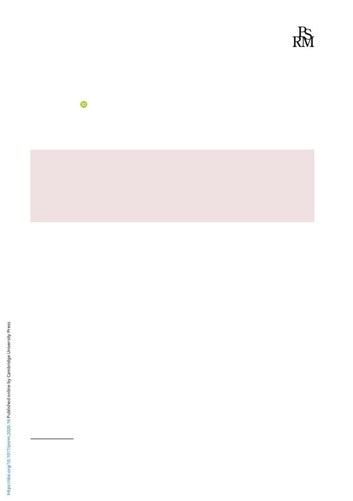

Political Science Research and Methods (2022), 10, 97–115
doi:10.1017/psrm.2020.16
ORIGINAL ARTICLE
A new geography of civil war: a machine learning
approach to measuring the zones of armed conflicts
Kyosuke Kikuta*
Osaka School of International Public Policy, Osaka University, 1-31 Machikaneyamacho, Toyonaka, Osaka, 560-0043, Japan
(Received 22 April 2019; revised 24 November 2019; accepted 8 January 2020; first published online 13 May 2020)
Abstract
Where do armed conflicts occur? In applied studies, we may take ad hoc approaches to answer this ques-
tion. In some regression studies, for instance, a single conflict event can cause an entire province to be
classified as a conflict zone. In this paper, I fill this void of knowledge by developing a machine learning
method that is less dependent on the areal-unit assumptions and can flexibly estimate conflict zones. I
apply the method to a conflict event dataset and create a new dataset of conflict zones. A replication
of Daskin and Pringle (2018, Nature 553, 328–332) with the new dataset indicates that the effect of
civil war on mammal populations is much smaller than the original estimate.
Key words: Armed conflict; conflict zones; machine learning
Where does armed conflict occur? Despite the plethora of subnational studies on civil war, we still
lack clear answers to this question, which we may think of as a mere nuisance. In a number of
regression studies, for instance, scholars use specific areal units, such as administrative boundaries
or grid cells, and assume that the presence of a combatant event means that the entire unit is a
conflict zone. These areal assignments are so common that we may not recognize that they are
in fact assumptions. For example, a number of studies using the PRIOGRID (Tollefsen et al.,
2012) assume that if one or more events occur in a grid cell, the entire 55-km-by-55-km cell
would be affected by the conflict (Buhaug et al., 2011; Pierskalla and Hollenbach, 2013; Fjelde
and Hultman, 2014). Other scholars use large administrative units, such as provinces
(Cunningham and Weidmann, 2010; Fjelde and von Uexkull, 2012; Ritter and Conrad, 2016),
and rely on a similar set of assumptions. Although these studies carefully defend their choices of
areal units and measurements, none check the robustness of their findings with alternative units.1
The areal-assignment assumptions are, however, consequential for our understanding of civil
war. As an example, the following figure (Figure 1), maps the zones of the Somali Civil War
(1989–2017) made by the different areal-unit assignment rules but with the same dataset of con-
flict events (UCDP GED; Sundberg et al., 2010). If one assigns the conflict events to the grid cells
(PRIOGRID; Tollefsen et al., 2012; red dotted polygons in Figure 1), the conflict zones tightly fit
the conflict event locations (dot points in Figure 1). In contrast, if one uses the second-order
administrative units (districts; blue dot-dashed polygons in Figure 1), the conflict zones grow
to include lands within Somalia. The UCDP Polygons Dataset (Croicu and Sundberg, 2012; yel-
low dashed polygons in Figure 1)—a commonly used conflict zones dataset—indicates an even
1This is despite the long-standing attention to the so-called modifiable areal unit problem (Buhaug and Lujala, 2005).
© The European Political Science Association 2020. This is an Open Access article, distributed under the terms of the Creative Commons
Attribution-NonCommercial-NoDerivatives licence (http://creativecommons.org/licenses/by-ncnd/4.0/), which permits non-commercial re-
use, distribution, and reproduction in any medium, provided the original work is unaltered and is properly cited. The written permission
of Cambridge University Press must be obtained for commercial re-use or in order to create a derivative work.